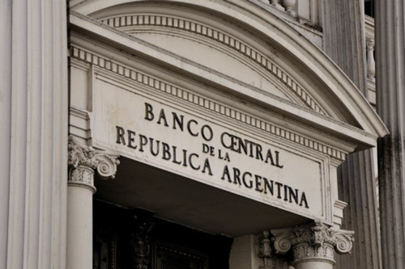

Real Chubut - Agencia de Noticias


BCRA inauguró "no pasarán" de Sturzenegger: mayorista a $ 25

• LA ENTIDAD YA NEGOCIÓ CON BANCOS PÚBLICOS Y PRIVADOS
Es una ofrenda final para el FMI. Se sabe que el Fondo no financiará corridas. El organismo evaluará la situación de la Argentina desde el viernes.
El Gobierno hizo ayer la ofrenda final al Fondo Monetario Internacional (FMI): llevar el dólar mayorista a los 25 pesos, como mecanismo inmediato de licuación de parte del déficit fiscal y baja del costo argentino. La decisión la hizo operativa ayer el Banco Central a las 10:01 de la mañana, en casi la madrugada del mercado, como una demostración de suba definitiva de la divisa y, al mismo tiempo, un "no pasarán" criollo para defender esa valuación mayorista. La estrategia de la entidad que maneja Federico Sturzenegger es ahora la de sostener ese precio, mostrar al mercado que esa es la decisión política oficial del gobierno; y que, hacia delante, ese será el precio que se sostendrá.
Para que esta apuesta sea creíble, la entidad hizo la jugada más fuerte en muchas décadas: poner sobre la mesa unos u$s 5.000 millones permanentes y renovables a un precio predeterminado (y fijo), que se sostendrá hasta que pase la tormenta de las Lebacs de hoy y se concrete la reunión del board del FMI el viernes. Sólo después comenzará a relajarse la política cambiaria a mecanismos de más equilibrios. Para arriba o para abajo. Al menos esa es la intención oficial que desde el BCRA con el aval de la Casa Rosada, Sturzenegger comenzó a aplicar desde ayer, y que hoy continuará. Así, desde esta misma mañana, todas las mesas de dinero del sistema financiero a rgentino tendrán la misma leyenda desde el Central: 5000 millones de dólares permanentes para sostener el precio del dólar mayorista a 25 pesos. Y si el mercado consume los u$s 5.000 millones, automáticamente se renovarán. La intención firme del gobierno es la de mostrar todo el tiempo que está disponible y renovable, ese dinero para cubrir cualquier demanda efectiva que provenga de los desencantados de las Lebacs. La especulación incluye la certeza que, en algún momento de la batalla cambiaria inaugurada el 25 de abril pasado cuando comenzaron a retirarse los no residentes; el mercado se convencerá que el precio de los 25 pesos por dólar mayorista es, al menos por ahora, una política de estado.
La otra señal que quiere enviar desde ayer el BCRA es que no es tiempo de apuesta al aarry trade; y que es el momento de volver a confiar en una renovación de las posiciones de Lebacs. La decisión de elevar el precio del dólar de una manera importante y firme a 24 horas de la megalicitación de hoy, apuntó también a bombardear cualquier intento de salida de posiciones en pesos a un precio subsidiado. EL BCRA quiere mostrar hacia delante, que esos tiempos ya pasaron, y quedaron enterrados con el negoción (para algunos) del 25 de abril.
El mensaje del "no pasarán" está dirigido no sólo a los operadores del mercado financiero habitual; sino, específicamente, para los tenedores de Lebacs que hoy decidan no renovar y volcarse al dólar. Para esto, afirma la entidad, estarían disponibles todos los billetes que se busquen, pero al precio de ejecución del Central. Ni más ni menor. Si quieren pagar más caro, deberán concurrir al mercado privado. Según los cálculos que hace el Central, los u$s 5.000 millones a disponibilidad alcanzarán sin mayores problemas. Según los gráficos que circulaban ayer por los despachos oficiales, de los u$s 30.000 millones; ya estarían cerradas las renovaciones de las tenencias del Anses a través del Fondo de Garantía Sustentable (FGS) y otras cajas previsionales, los bancos públicos y las compañías de seguro que no pueden invertir en otros instrumento que no sean pesos. El BCRA estuvo negociando ayer desde las 15 horas, cara a cara en muchos casos, con bancos privados también la renovación automática. Entre los "entrevistados", figuran dos grandes bancos de capital nacional, uno cooperativo y tres internacionales. Todos habrían aceptado la propuesta de renovar. La duda que quedaba entonces era que decisión tomarían los no residentes residuales y los residentes, en su mayoría operando desde fondos de inversión. Según los cálculos oficiales, la suma de todos estos operadores llegaría a los u$s 5.000 millones. Por esto, desde primera hora de hoy, ese dinero volverá a estar disponible en todas las pantallas de las principales mesas de dinero del país, a disposición de quien quiera comprar a ese nivel. Lo mismo sucederá mañana y el jueves. La intención final es llegar al momento de la reunión del board del FMI, con la semana dominada.
Y, si es posible, con el primer round del operativo de renacimiento de la confianza completado. Y a partir del mismo viernes, comenzar la etapa de reconstrucción, previo cálculo de daños.
Ayer el vocero del FMI, Gerry Rice, anunció que "el personal del FMI continúa el diálogo con las autoridades argentinas con el fin de lograr un programa respaldado por el Fondo. Nuestro objetivo común es llegar a un rápido acuerdo en estas negociaciones" y anunció que " la reunión del Directorio Ejecutivo del FMI sobre Argentina está programada para el viernes 18 de mayo. Esta será una reunión informal que hace parte del proceso usual en el FMI de informar al Directorio Ejecutivo sobre negociaciones de programas de alto acceso". Será una formalidad para el inicio oficial de las negociaciones del organismo con la Argentina. La reunión la comandará en persona la directora gerente Christine Lagarde; y, se espera, lanzará una filípica a favor de un rápido acuerdo con el país. Tendrá que ser convincente. En el board hay representantes de países poco proclives a liberar dinero sin compromisos fiscales firmes y duros. Será el momento entonces en que en el auditorio central del cuarto piso del FMI aparezca, en serio, el apoyo que Donald Truump y Angela Merkel tanto prometieron en público.
Unos días después comenzará el partido en serio, cuando los técnicos del FMI comandados por el italiano Roberto Caldarelli se reúna con los funcionarios argentinos para empezar a hablar de los números argentinos. Algo queda claro: el FMI no financiará una corrida cambiaria a dólares subsidiados.
Fuente: Ambito